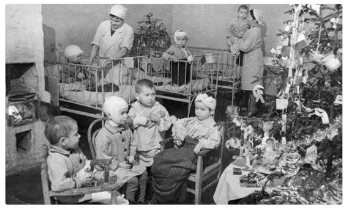

В. Воскобойников "Девятсот дней мужества"
Максим Емельянович Твердохлеб
Первого января в детском саду у Алеши Пахомова была настоящая елка. Пришел военный гармонист и стал играть веселые песни. Алеша раньше любил плясать под музыку, и другие ребята тоже, но теперь сил у них не было, они лишь сидели на лавочках и тихо хлопали в ладоши. А из кухни доносился вкусный запах...

В конце праздника им дали настоящий обед. На первое был суп, и в нем плавала лапша. На второе - гречневая каша с настоящей котлеткой. А на третье воспитательница вынесла мандарины, каждому - по мандарину. Алеше достался ярко-желтый мандарин с круглой дыркой насквозь. Он подумал, что эта дырка в мандарине выросла. Он не знал тогда о шофере Максиме Твердохлебе.
Максим Твердохлеб тоже не знал про Алешу Пахомова, но каждую минуту жизни он помнил, что в родном городе умирают от голода люди. Он возил хлеб через Ладожское озеро.
Сначала лед был еще слабый, и в первый раз они выехали на пяти грузовиках, на большом расстоянии друг от друга. За три дня перед ними прошел пробный санный обоз. Машины двигались медленно, кабины были открыты, шоферы всматривались в следы саней, в трещины на слабом льду. Одна машина попала в полынью, утонула. Шофер успел выпрыгнуть. Там, на другом берегу Ладожского озера, скопилось много продуктов. Все лучшее страна отдавала Ленинграду, а город продолжал голодать, потому что продукты перевезти было трудно.
Постепенно лед на Ладоге твердел. И с 25 декабря ленинградцы стали получать больше хлеба. Рабочим выдавали по 350 граммов, всем остальным - по 200. Это было очень мало, но уже появилась надежда: выживем! И все-таки бывали недели, когда хлеба в городе оставалось на полтора дня.
Максим Твердохлеб водил машину без сна уже третьи сутки. 31 декабря на складе продуктов ему сказали:
- Особой важности груз доверяем вам, товарищ старшина Твердохлеб. Вот фанерные ящики, и на каждом написано: "Детям героического Ленинграда". Это мандарины из Грузии, для новогодних праздников детям. Берегите их изо всех сил. доверяем вам как лучшему шоферу.
Ладожское озеро широкое, как море. У него не видно другого берега. Зато машина, идущая среди ровных белых льдов, видна издалека. И в тот момент, когда над озером пролетали фашистские истребители, шофер Твердохлеб понял, что они на него нападут.
Истребители развернулись, спикировали на машину и дали по ней очередь из пулеметов. Но Максим Твердохлеб успел резко остановить машину, и фашистские пули пролетели мимо. Однако фашисты развернули самолеты и снова пошли в атаку на грузовик. Только теперь они с воем мчались на него с разных сторон - промахнется один, зато попадет другой.
В таких случаях шоферы выскакивали из машины и прятались в сугроб - лишь бы живым остаться. Машину можно починить, а за грузом на другой день кто-нибудь приедет.
Но Твердохлеб вез мандарины. Их нельзя морозить, их надо быстрей везти ленинградским детям. И Максим Емельянович продолжал борьбу с фашистскими самолетами. Бросал машину то влево, то вправо. Внезапно останавливал ее, снова мчался вперед. Пулеметная очередь пробила кабину. Другая - разбила переднее стекло, остались торчать лишь осколки. Третья очередь отколола кусок от руля. Кровь заливала лицо шофера, были поранены руки, но машина продолжала идти. Наконец у фашистов кончились патроны, и они улетели.
Когда шофер Твердохлеб довез мандарины до места, он не мог сразу разжать руки. Так крепко, изо всех сил, сжимал он остаток изломанного руля. Друзья вынесли его из кабины и перевязали. Сорок девять пробоин насчитали они в машине.
И в мандарине Алеши Пахомова тоже была пробоина от фашистской пули.
Через несколько дней шофер Максим Емельянович Твердохлеб снова возил продукты для ленинградцев по "Дороге жизни". Так называли дорогу в осажденный фашистами Ленинград через Ладожское озеро.